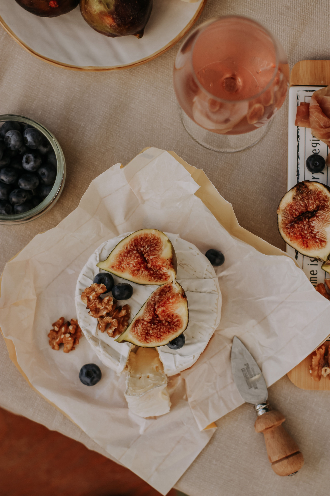
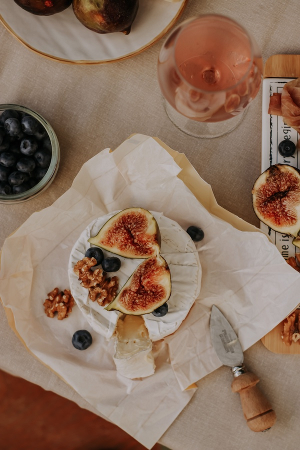
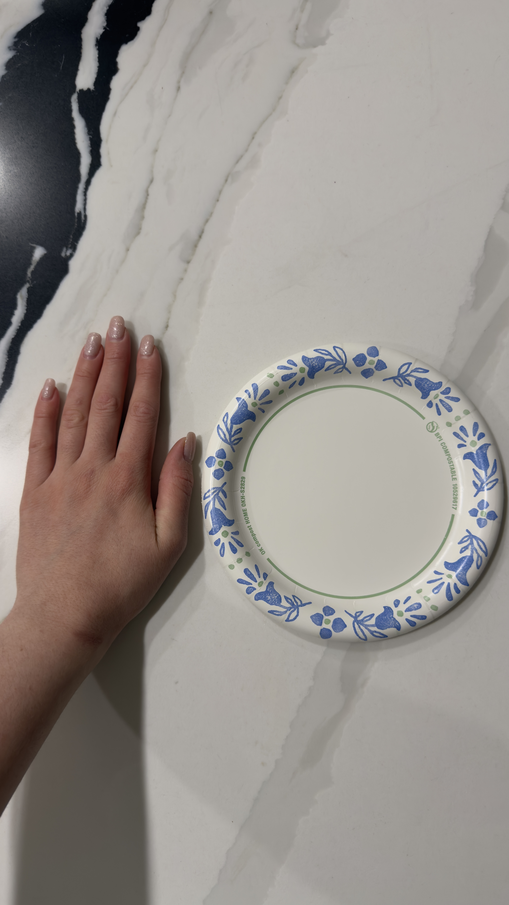

Original Image
Click to open each version: Original JPG | GIF | Grayscale | Black & White
This page demonstrates how digital images can be displayed and manipulated for the web. It compares different image formats, resizing methods, and proper versus improper image scaling. The first image is a high-resolution photograph from Pexels, while the second is a personal photograph taken specifically for this assignment.
I chose this image because it contains many detailed textures, colors, and lighting effects. The photograph was taken by Nati and downloaded from Pexels. The original image is a JPG with a high resolution, making it ideal for demonstrating image resizing, compression, and maintaining correct proportions on web pages.

Click to open each version: Original JPG | GIF | Grayscale | Black & White
The original image is displayed at a smaller size using only CSS while preserving its original proportions.
This image was resized in an image editor before being displayed on the webpage. This reduces file size while maintaining excellent visual quality.

The image on the left was resized correctly. The image on the right was reduced to 25% of its original size and then enlarged with CSS, causing a noticeable loss of quality.
This photograph was taken specifically for this assignment. I chose a perfectly round paper plate placed beside my hand to demonstrate the importance of image proportions. Since the plate is perfectly round, it becomes easy to see when an image is stretched or squished. The original image is a high-resolution JPG taken with a smartphone.

Click to open each version: Original JPG | GIF | Grayscale | Black & White
The original image is displayed at a much smaller size using CSS while keeping the correct aspect ratio.
This version was resized in an image editor before being displayed on the webpage. Editing the image first reduces file size and improves loading speed while keeping the image sharp.

The left image was resized properly in an image editor. The right image was reduced to 25% of its size and then enlarged using CSS to the same display size. The enlarged image appears less detailed because of the loss of resolution.

AI was used to help organize the HTML structure, generate descriptive text, and explain how different image manipulation techniques work. I used the AI as a guide while creating the page and editing my images.
The biggest challenge was keeping all of the image filenames organized and creating multiple versions of each image. I learned the importance of maintaining image proportions, reducing file sizes properly, and choosing the correct image formats for web development.